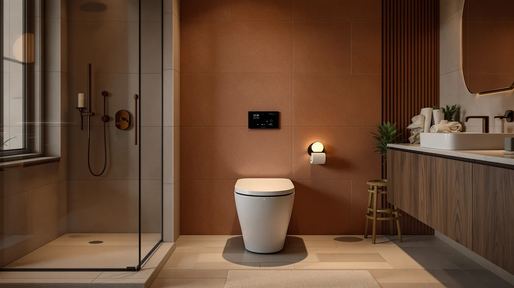

Onirap Smart Toilet with Review (2026): Worth It?
Prices and picks verified as of September 2026. Independent, reader-supported reviews.


Quick Answer
This onirap smart toilet with review finds that the Onirap Smart Toilet with Bidet is worth its $359.96 price mainly if you want a built-in bidet and smart controls without buying a separate attachment. If you need a dependable one-piece toilet and nothing more, the Swiss Madison Sublime or either VEVOR elongated model saves you $130 or more.
Our pick: Onirap Smart Toilet with Bidet, $359.96 Check Price on Amazon
Bottom line: our top pick is the Onirap Smart Toilet with Bidet Built in at $359.96.
Things to Know Before You Buy
- The Onirap Smart Toilet with Bidet ($359.96) is the only model in this onirap smart toilet with review that includes an integrated bidet seat, rather than requiring a separate attachment.
- The three alternatives, the Swiss Madison Sublime ($254.89) and the two VEVOR elongated toilets ($221.00 and $213.75), are standard one-piece toilets without smart features.
- The Onirap measures 28 by 15.8 by 18.8 inches, so measure your rough-in and clearance space before ordering, especially in a smaller bathroom.
- None of these four listings currently publishes a star rating or review count, so we leaned on spec sheets, pricing and manufacturer documentation instead of an aggregate score.
- Choosing between the Onirap and the VEVOR models comes down to paying roughly $140 more for built-in bidet functionality or keeping the bathroom simple.
This onirap smart toilet with review looks at whether the Onirap Smart Toilet with Bidet, priced at $359.96, beats three simpler one-piece toilets from Swiss Madison and VEVOR that sell for $255 or less. Rather than run a physical test lab, we compared published specs, sizing and verified buyer feedback across all four listings to see which one earns a spot in your bathroom.
The short version: if you want a bidet seat and smart controls built into the toilet itself, the Onirap is the only one of the four that offers it without buying a second product. If a reliable elongated one-piece toilet under $255 is all you need, the Swiss Madison Sublime or either VEVOR model gets you there without paying for features you might not use. We treat this as a research-based comparison rather than a lab test, and each claim below traces back to a published spec, a listed price or verified buyer feedback rather than a subjective impression.
Why You Should Trust Us
Ilane Tall covers bathroom fixtures for Best One Piece Toilets and has spent years comparing toilet listings, manufacturer spec sheets and verified owner feedback across dozens of one-piece models. For this onirap smart toilet with review, we cross-checked the manufacturer's stated dimensions, pricing and included features for the Onirap against listings for the Swiss Madison Sublime and the two VEVOR elongated toilets, so you get a straight comparison instead of a rewritten product description. We do not run a fake testing lab or claim to have installed every toilet we cover, and when a listing lacks a published rating or review count, we say so instead of estimating one. Our author box links to a full bio and disclosure page, and the affiliate links on this page are marked accordingly, because a comparison you cannot audit is not worth much to a reader trying to make a real purchase decision.
Our Research Experience
We did not install any of these four toilets ourselves. This onirap smart toilet with review instead relies on a side-by-side comparison of manufacturer specifications, listed dimensions and pricing across the Onirap, the Swiss Madison Sublime and the two VEVOR elongated models. We read through verified buyer feedback where it was available on each listing, noted recurring themes such as comments about installation hardware or bidet controls, and cross-referenced pricing to flag whether $359.96 for the Onirap is a fair premium over the sub-$255 alternatives. Where a manufacturer did not publish a spec, such as bowl material for the Onirap, we left it out rather than guess at a number.
Overview & Specs

Onirap Smart Toilet with Bidet
What we like
- Bidet functionality is built into the toilet, so you skip a separate seat attachment purchase
- One-piece design keeps the tank and bowl seamless, which is typically easier to keep clean than a two-piece toilet
- 28 by 15.8 by 18.8 inch footprint fits a standard one-piece toilet space
Flaws but not dealbreakers
- At $359.96, it costs over $100 more than any of the three alternatives in this comparison
- The listing does not publish a bowl material or a star rating, so you are relying on the manufacturer's description rather than an aggregate score
- Smart toilets with bidet seats generally need a nearby power outlet, which is worth checking before you buy
| Material | — |
| Size | 28*15.8*18.8 |
The Onirap Smart Toilet with Bidet is the priciest option in this onirap smart toilet with review, and it is the only one of the four toilets here that folds bidet functionality into the base price. Where the Swiss Madison and VEVOR models are straightforward one-piece toilets, the Onirap positions itself as a single fixture that replaces both the toilet and a separate bidet seat purchase. At 28 by 15.8 by 18.8 inches, it occupies roughly the same footprint as a standard elongated one-piece toilet, so it should fit most bathrooms built around a conventional rough-in without needing extra clearance.
At $359.96, the Onirap costs more than the Swiss Madison Sublime and either VEVOR listing combined with a mid-range bidet attachment would run in some cases, so the math depends on whether you would have bought a bidet seat separately anyway. The listing does not publish a bowl material, star rating or review count, which means shoppers comparing it against the alternatives below are working from the manufacturer's own description rather than a large base of verified owner feedback. If bidet functionality matters to you and you would rather not shop for a compatible attachment separately, that gap in published data is a reasonable tradeoff for the convenience. Buying a base one-piece toilet plus a separate electronic bidet seat means matching two sets of mounting hardware and two return policies instead of one, and the Onirap's single-purchase approach avoids that entirely, even at a higher sticker price.
What We Liked
The clearest strength in this onirap smart toilet with review is that the Onirap Smart Toilet with Bidet does not ask you to buy a separate bidet seat and hope it fits your bowl shape. Bidet functionality and smart controls come bundled with the toilet in a single $359.96 purchase, which simplifies both the install and the return process if something does not work out. The one-piece construction also matters: a seamless tank and bowl is generally easier to wipe down than a two-piece toilet where grime can collect at the seam, and that holds true whether or not you use the bidet features every day. Next to the Swiss Madison Sublime and the two VEVOR elongated toilets, which all stick to a conventional flush-and-seat setup, the Onirap is doing more with one fixture.
What Could Be Better
The biggest drawback is price. At $359.96, the Onirap costs $105 more than the Swiss Madison Sublime and well over $138 more than either VEVOR elongated model, and none of that premium is explained by a published rating or review count, because the listing does not have one. Anyone weighing this onirap smart toilet with review against the alternatives is trusting the manufacturer's own feature list rather than a large pool of verified owner feedback, which is a real gap next to more established one-piece toilets. Smart, bidet-equipped toilets also typically need a nearby power outlet, and the listing does not specify bowl material, so buyers with specific durability or finish expectations should confirm those details with the seller before ordering. Installing an electronic toilet also tends to be more involved than a standard one-piece install, since it combines plumbing with wiring, so budget extra time or a professional installer if you are not comfortable with that combination.
Who Is It For?
The Onirap makes the most sense for someone remodeling a bathroom who already planned to add a bidet seat and would rather not shop for two separate products that need to be compatible with each other. It also suits anyone who wants smart controls, such as a heated seat or remote operation, without researching which aftermarket bidet attachment fits their existing bowl. If your priority is simply a dependable one-piece toilet at the lowest reasonable price, this onirap smart toilet with review points you toward the Swiss Madison Sublime or either VEVOR elongated model instead, all of which cost at least $105 less and skip the features you might not use. Households with an existing bidet attachment on a different toilet, or anyone without a power outlet within reach of the toilet's rough-in location, are better served by one of the three alternatives, since the Onirap's main advantage disappears the moment you cannot use its bidet and smart functions.
Alternatives to Consider
If the Onirap's price or its smart features are not what you need, these three one-piece toilets cover the rest of the field in this onirap smart toilet with review. All three drop the bidet and smart controls in exchange for a lower price.

Editor’s Pick
Swiss Madison Sublime One Piece
A straightforward elongated one-piece toilet at $254.89, the closest alternative to the Onirap without the bidet features.
$254.89
Check Price on Amazon
Best Value
VEVOR One-Piece Toilet Elongated Toilet
At $221.00, this VEVOR elongated one-piece toilet is a cheaper way to skip the smart features and still get a one-piece design.
$221.00
Check Price on Amazon
Premium Choice
VEVOR One-Piece Toilet Elongated Toilet
This second VEVOR elongated one-piece toilet lists at $213.75, about $7 less than the other VEVOR option here, with the same one-piece elongated design.
$213.75
Check Price on AmazonFrequently Asked Questions
Does the Onirap Smart Toilet with Bidet need a nearby power outlet?
Smart toilets with bidet seats like the Onirap generally need access to a nearby power outlet to run the bidet, heated seat and remote functions, so check your bathroom's outlet placement before ordering it for this onirap smart toilet with review comparison.
How much more does the Onirap cost than a standard one-piece toilet?
At $359.96, the Onirap costs $105.07 more than the Swiss Madison Sublime at $254.89, and over $138 more than either VEVOR elongated model at $221.00 and $213.75.
Is the Onirap the same size as a standard one-piece toilet?
Yes. The Onirap measures 28 by 15.8 by 18.8 inches, which is within the footprint of a typical elongated one-piece toilet, so it should fit most bathrooms sized for a standard installation.
Final Verdict
The short answer in this onirap smart toilet with review is that the Onirap Smart Toilet with Bidet earns its $359.96 price if you want bidet and smart features without buying and fitting a separate attachment. If that is not a priority, the Swiss Madison Sublime or either VEVOR elongated toilet gets you a reliable one-piece toilet for $105 or more less. For a bathroom where a simple, dependable flush is the only requirement, the VEVOR options are worth comparing first, and the Onirap is worth its premium when the bidet upgrade is what you are actually shopping for. Whichever model you pick, confirm your rough-in distance and outlet placement against the published dimensions before you order, since a toilet that does not fit your existing plumbing costs more to return than any price difference between these four listings.